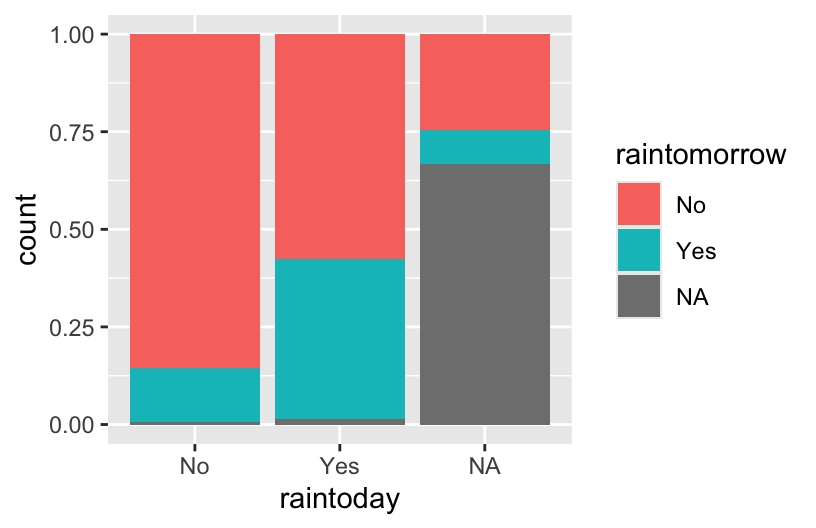
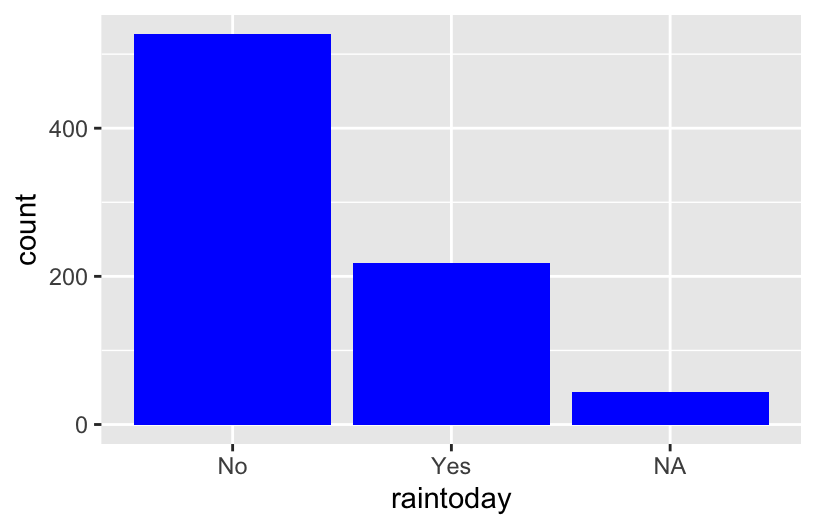
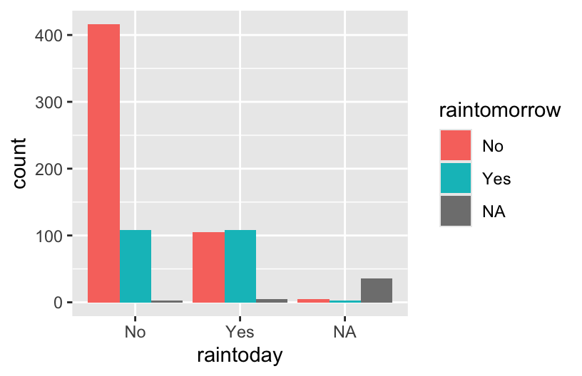
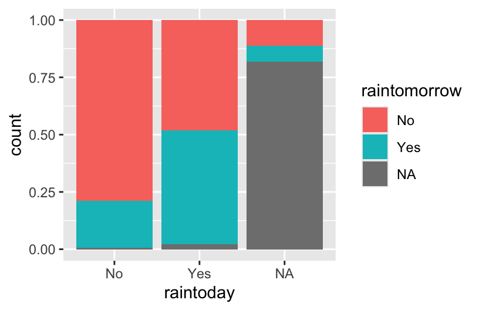
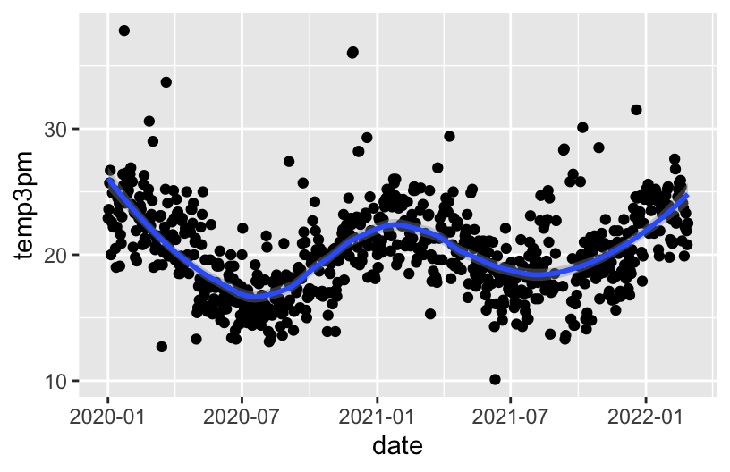
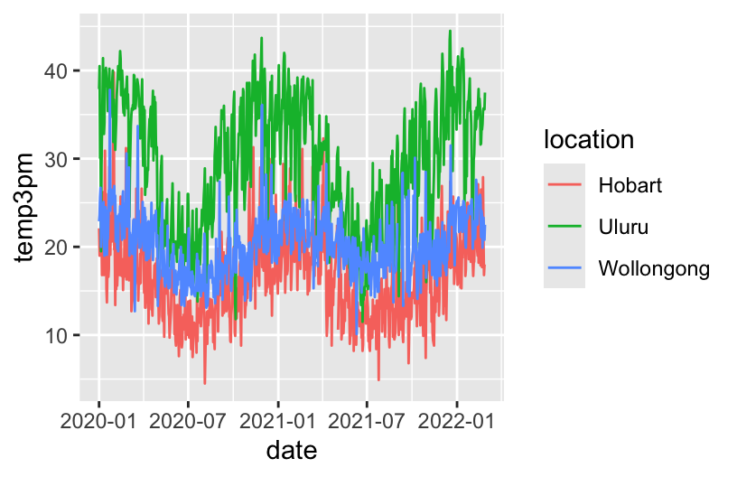
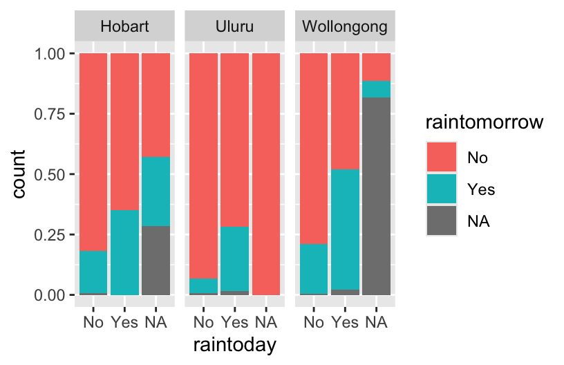

Multivariate Viz
Learning Goals
- Explore how to visualize relationships between more than 2 variables.
Additional Resources
For more information about the topics covered in this chapter, refer to the resources below:
- More ggplot (YouTube) by Lisa Lendway
8.1 Review
Let’s review some univariate and bivariate plotting concepts using some daily weather data from Australia. This is a subset of the data from the weatherAUS data in the rattle package.
Example 1
Construct a plot that allows us to examine how temp3pm varies.
Example 2
Construct 3 plots that address the following research question:
How do afternoon temperatures (temp3pm) differ by location?
Reflection
- Temperatures tend to be highest, and most variable, in Uluru. There, they range from ~10 to ~45 with a typical temp around ~30 degrees.
- Temperatures tend to be lowest in Hobart. There, they range from ~5 to ~45 with a typical temp around ~15 degrees.
- Wollongong temps are in between and are the least variable from day to day.
SUBTLETIES: Defining fill or color by a variable
How we define the fill or color depends upon whether we’re defining it by a named color or by some variable in our dataset. For example:
geom___(fill = "blue")
named colors are defined outside theaesthetics and put in quotesgeom___(aes(fill = variable))orggplot(___, aes(fill = variable))
colors/fills defined by a variable are defined inside theaesthetics
Example 3
Let’s consider Wollongong alone:


Reflection
There’s often not one “best plot”, but a combination of plots that provide a complete picture:
- The stacked and side-by-side bars reflect that on most days, it does not rain.
- The proportional / filled bars lose that information, but make it easier to compare proportions: it’s more likely to rain tomorrow if it also rains today.
Example 4
Construct a plot that illustrates how 3pm temperatures (temp3pm) vary by date in Wollongong. Represent each day on the plot and use a curve/line to help highlight the trends.

NOTE: A line plot isn’t always appropriate! It can be useful in situations like this, when our data are chronological.
Reflection
There’s a seasonal / cyclic behavior in temperatures – they’re highest in January (around 23 degrees) and lowest in July (around 16 degrees). There are also some outliers – some abnormally hot and cold days.
8.2 New Stuff
Next, let’s consider the entire weather data for all 3 locations. The addition of location adds a 3rd variable into our research questions:
- How does the relationship between
raintodayandraintomorrowvary bylocation? - How does the behavior of
temp3pmoverdatevary bylocation? - And so on.
Thus far, we’ve focused on the following components of a plot:
- setting up a frame
- adding layers / geometric elements
- splitting the plot into facets for different groups / categories
- change the theme, e.g. axis labels, color, fill
We’ll have to think about all of this, along with scales. Scales change the color, fill, size, shape, or other properties according to the levels of a new variable. This is different than just assigning scale by, for example, color = "blue".
Work on the examples below in your groups. Check in with your intuition! We’ll then discuss as a group as relevant.
Example 5


Example 6
Example 7

How to Not Get Overwhelmed?
There’s no end to the number and type of visualizations you could make. And it’s important to not just throw spaghetti at the wall until something sticks. FlowingData shows that one dataset can be visualized many ways, and makes good recommendations for data viz workflow, which we modify and build upon here:
Identify simple research questions.
What do you want to understand about the variables or the relationships among them?-
Start with the basics and work incrementally.
- Identify what variables you want to include in your plot and what structure these have (eg: categorical, quantitative, dates)
- Start simply. Build a plot of just 1 of these variables, or the relationship between 2 of these variables.
- Set up a plotting frame and add just one geometric layer at a time.
- Start tweaking: add whatever new variables you want to examine,
-
Ask your plot questions.
- What questions does your plot answer? What questions are left unanswered by your plot?
- What new questions does your plot spark / inspire?
- Do you have the viz tools to answer these questions, or might you learn more?
Focus.
Reporting a large number of visualizations can overwhelm the audience and obscure your conclusions. Instead, pick out a focused yet comprehensive set of visualizations.
8.3 Exercises (required)
The story
Though far from a perfect assessment of academic preparedness, SAT scores have historically been used as one measurement of a state’s education system. The education dataset contains various education variables for each state:
State expend ratio salary frac verbal math sat fracCat
1 Alabama 4.405 17.2 31.144 8 491 538 1029 (0,15]
2 Alaska 8.963 17.6 47.951 47 445 489 934 (45,100]
3 Arizona 4.778 19.3 32.175 27 448 496 944 (15,45]
4 Arkansas 4.459 17.1 28.934 6 482 523 1005 (0,15]
5 California 4.992 24.0 41.078 45 417 485 902 (15,45]
6 Colorado 5.443 18.4 34.571 29 462 518 980 (15,45]A codebook is provided by Danny Kaplan who also made these data accessible:

Exercise 1: SAT scores
Part a
Construct a plot of how the average sat scores vary from state to state. (Just use 1 variable – sat not State!)
Part b
Summarize your observations from the plot. Comment on the basics: range, typical outcomes, shape. (Any theories about what might explain this non-normal shape?)
The sat score varies from about 850 to 1100, and the most typical outcome is score 900 on sat. The distribution of the sat from is unimodel, and right skewed.
Exercise 2: SAT Scores vs Per Pupil Spending & SAT Scores vs Salaries
The first question we’d like to answer is: Can the variability in sat scores from state to state be partially explained by how much a state spends on education, specifically its per pupil spending (expend) and typical teacher salary?
Part a
Part b
What are the relationship trends between SAT scores and spending? Is there anything that surprises you?
People spend less tend to score higher sat score and people with low salary also tend to have higher sat score.
Exercise 3: SAT Scores vs Per Pupil Spending and Teacher Salaries
Construct one visualization of the relationship of sat with salary and expend. HINT: Start with just 2 variables and tweak that code to add the third variable. Try out a few things!
Exercise 4: Another way to Incorporate Scale
It can be tough to distinguish color scales and size scales for quantitative variables. Another option is to discretize a quantitative variable, or basically cut it up into categories.
Construct the plot below. Check out the code and think about what’s happening here. What happens if you change “2” to “3”?
Describe the trivariate relationship between sat, salary, and expend. sat score decrease as the salary and expend increase.
Exercise 5: Finally an Explanation
It’s strange that SAT scores seem to decrease with spending. But we’re leaving out an important variable from our analysis: the fraction of a state’s students that actually take the SAT. The fracCat variable indicates this fraction: low (under 15% take the SAT), medium (15-45% take the SAT), and high (at least 45% take the SAT).
Part a
Build a univariate viz of fracCat to better understand how many states fall into each category.

Part b
Build 2 bivariate visualizations that demonstrate the relationship between sat and fracCat. What story does your graphic tell and why does this make contextual sense?

Part c
Make a trivariate visualization that demonstrates the relationship of sat with expend AND fracCat. Highlight the differences in fracCat groups through color AND unique trend lines. What story does your graphic tell?
Does it still seem that SAT scores decrease as spending increases?

No, in each fraction, the sat score seems to increase as the expend increases.
Part d
Putting all of this together, explain this example of Simpson’s Paradox. That is, why did it appear that SAT scores decrease as spending increases even though the opposite is true?
There are variables that affect the relationship. In this case, student participation tend to be lower among states with lower expenditure.
8.4 Exercises (optional)
Exercise 6: Heat Maps
As usual, we’ve only just scratched the surface! There are lots of other data viz techniques for exploring multivariate relationships. Let’s start with a heat map.
Part a
Run the chunks below. Check out the code, but don’t worry about every little detail! NOTES:
- This is not part of the
ggplot()grammar, making it a bit complicated. - If you’re curious about what a line in the plot does, comment it out (
#) and check out what happens! - In the plot, for each state (row), each variable (column) is scaled to indicate whether the state has a relative high value (yellow), a relatively low value (purple), or something in between (blues/greens).
- You can also play with the color scheme. Type
?cm.colorsin the console to learn about various options. - We’ll improve the plot later, so don’t spend too much time trying to learn something from this plot.
Part b
In the final two plots, the states (rows) are rearranged by similarity with respect to these education metrics. The final plot includes a dendrogram which further indicates clusters of similar states. In short, states that have a shorter path to connection are more similar than others.
Putting this all together, what insight do you gain about the education trends across U.S. states? Which states are similar? In what ways are they similar? Are there any outliers with respect to 1 or more of the education metrics?
Exercise 7: Star plots
Like heat maps, star plots indicate the relative scale of each variable for each state. Thus, we can use star maps to identify similar groups of states, and unusual states!
Part a
Construct and check out the star plot below. Note that each state has a “pie”, with each segment corresponding to a different variable. The larger a segment, the larger that variable’s value is in that state. For example:
- Check out Minnesota. How does Minnesota’s education metrics compare to those in other states? What metrics are relatively high? Relatively low?
- What states appear to be similar? Do these observations agree with those that you gained from the heat map?
Part b
Finally, let’s plot the state stars by geographic location! What new insight do you gain here?!
8.5 Solutions
Click for Solutions
date location mintemp maxtemp rainfall evaporation sunshine
1 2020-01-01 Wollongong 17.1 23.1 0 NA NA
2 2020-01-02 Wollongong 17.7 24.2 0 NA NA
3 2020-01-03 Wollongong 19.7 26.8 0 NA NA
4 2020-01-04 Wollongong 20.4 35.5 0 NA NA
5 2020-01-05 Wollongong 19.8 21.4 0 NA NA
6 2020-01-06 Wollongong 18.3 22.9 0 NA NA
windgustdir windgustspeed winddir9am winddir3pm windspeed9am windspeed3pm
1 SSW 39 SSW SSE 20 15
2 SSW 37 S ENE 13 15
3 NE 41 NNW NNE 7 17
4 SSW 78 NE NNE 15 17
5 SSW 57 SSW S 31 35
6 NE 35 ESE NE 17 20
humidity9am humidity3pm pressure9am pressure3pm cloud9am cloud3pm temp9am
1 69 64 1014.9 1014.0 8 1 19.1
2 72 54 1020.1 1017.7 7 1 19.8
3 72 71 1017.5 1013.0 6 NA 23.4
4 77 69 1008.8 1003.9 NA NA 24.5
5 70 75 1018.9 1019.9 NA 7 20.7
6 71 71 1021.2 1018.2 NA NA 20.9
temp3pm raintoday risk_mm raintomorrow
1 22.9 No 0.0 No
2 23.6 No 0.0 No
3 25.7 No 0.0 No
4 26.7 No 0.0 No
5 20.0 No 0.0 No
6 22.6 No 0.8 No[1] 2367'data.frame': 2367 obs. of 24 variables:
$ date : Date, format: "2020-01-01" "2020-01-02" ...
$ location : chr "Wollongong" "Wollongong" "Wollongong" "Wollongong" ...
$ mintemp : num 17.1 17.7 19.7 20.4 19.8 18.3 19.9 20.1 19.8 20.5 ...
$ maxtemp : num 23.1 24.2 26.8 35.5 21.4 22.9 25.6 23.2 23.1 25.4 ...
$ rainfall : num 0 0 0 0 0 0 0.8 1.6 0 0 ...
$ evaporation : num NA NA NA NA NA NA NA NA NA NA ...
$ sunshine : num NA NA NA NA NA NA NA NA NA NA ...
$ windgustdir : chr "SSW" "SSW" "NE" "SSW" ...
$ windgustspeed: int 39 37 41 78 57 35 44 41 39 56 ...
$ winddir9am : chr "SSW" "S" "NNW" "NE" ...
$ winddir3pm : chr "SSE" "ENE" "NNE" "NNE" ...
$ windspeed9am : int 20 13 7 15 31 17 30 31 24 19 ...
$ windspeed3pm : int 15 15 17 17 35 20 7 33 26 39 ...
$ humidity9am : int 69 72 72 77 70 71 76 77 76 79 ...
$ humidity3pm : int 64 54 71 69 75 71 72 76 79 76 ...
$ pressure9am : num 1015 1020 1018 1009 1019 ...
$ pressure3pm : num 1014 1018 1013 1004 1020 ...
$ cloud9am : int 8 7 6 NA NA NA NA 8 NA NA ...
$ cloud3pm : int 1 1 NA NA 7 NA NA NA NA NA ...
$ temp9am : num 19.1 19.8 23.4 24.5 20.7 20.9 22.9 21.3 21.2 23 ...
$ temp3pm : num 22.9 23.6 25.7 26.7 20 22.6 24.9 22.2 22.2 25.1 ...
$ raintoday : chr "No" "No" "No" "No" ...
$ risk_mm : num 0 0 0 0 0 0.8 1.6 0 0 1 ...
$ raintomorrow : chr "No" "No" "No" "No" ...Example 1

Example 2


Example 3





Example 4

Example 5


Example 6

Example 7

Exercise 1: SAT scores
Part a

Part b
average SAT scores range from roughly 800 to 1100. They appear bi-modal.
Exercise 2: SAT Scores vs Per Pupil Spending & SAT Scores vs Salaries
Part a


Part b
The higher the student expenditures and teacher salaries, the worse the SAT performance.
Exercise 3: SAT Scores vs Per Pupil Spending and Teacher Salaries

Exercise 4: Another Way to Incorporate Scale

States with lower salaries and expenditures tend to have higher SAT scores.
Exercise 5: Finally an Explanation
Part a

Part b
The more students in a state that take the SAT, the lower the average scores tend to be. This is probably related to self-selection.

Part c
When we control for the fraction of students that take the SAT, SAT scores increase with expenditure.

Part d
Student participation tends to be lower among states with lower expenditures (which are likely also the states with higher ed institutions that haven’t historically required the SAT). Those same states tend to have higher SAT scores because of the self-selection of who participates.
Exercise 6: Heat Maps
Part a


Part b
- Similar values in verbal, math, and sat.
- High contrast (an inverse relationship) verbal/math/sat scores and the fraction of students that take the SAT.
- Outliers of Utah and California in ratio (more students per teacher).
- While grouped, fraction and salary are not as similar to each other as the sat scores; it is also interesting to notice states that have high ratios have generally low expenditures per student.
Exercise 7: Star Plots
Part a
MN is high on the SAT performance related metrics and low on everything else. MN is similar to Iowa, Kansas, Mississippi, Missouri, the Dakotas…

Part b
When the states are in geographical ordering, we’d notice more easily that states in similar regions of the U.S. have similar patterns of these variables.